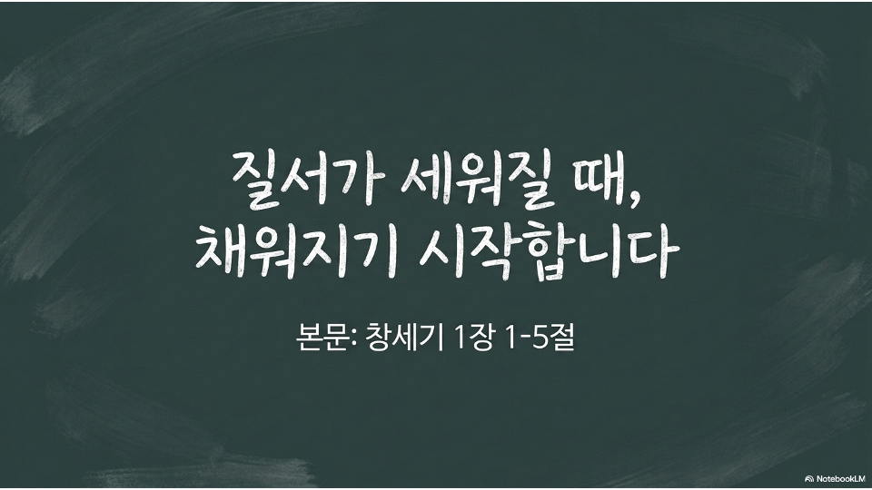

2026.06.14 주일 설교 묵상
질서가 세워질 때,
채워지기 시작합니다
무너진 삶의 질서를 세우고 하나님의 충만을 경험하는 7일의 여정
주일 설교 다시보기
설교 요약: 밤마다 잠들지 못하고 스마트폰과 TV를 켜는 이유는 피곤해서가 아니라, 내 삶의 통제되지 않는 혼돈과 밑 빠진 독 같은 공허를 직면하기 두렵기 때문입니다. 하나님은 창조 때 무질서 위에 먼저 질서(뼈대)를 세우시고(1~3일), 그 거룩한 틀 안에 생명을 가득 채우셨습니다(4~6일) — 질서가 세워져야 채워질 수 있습니다. 죄로 무너진 내 삶에 십자가의 빛이 비출 때 빛과 어둠이 나뉘고(회개), 하나님의 다스림이 회복됩니다. 질서를 바로 세우면 하나님께서 하늘의 평안과 능력으로 넘치게 채워주십니다.
주일 설교 슬라이드
1 / 15

좌우 화살표를 눌러 슬라이드를 넘겨보세요.
이렇게 묵상해 보세요
- 준비(멈춤): 자기 전 스마트폰을 끄고, 침묵 가운데 내면의 혼돈을 직면합니다.
- 읽기(말씀): 본문을 천천히 읽으며 마음에 와닿는 단어에 머뭅니다.
- 관찰 및 질문(묵상): 해설을 읽고, 깊은 질문을 통해 내 삶의 무너진 질서를 발견합니다.
- 적용 및 기도(결단): 십자가의 빛을 구하며, 내일 하루를 위한 작은 결단을 기도로 올려드립니다.
요일별 묵상 여정
월요일
제목
성경구절